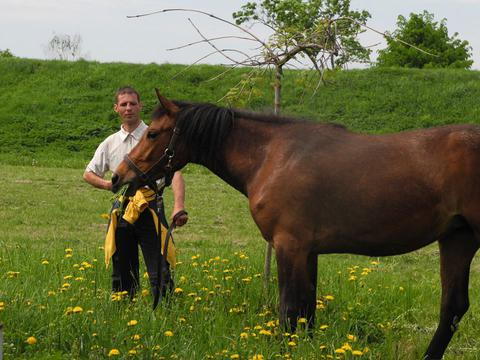

29 июля, понедельник
Всем составом Братсва собираемся в Веснянке храм Покрова Пресвятой Богородицы (в нашей форме), идем Крестным ходом к Свято-Духову собору встречать Патриарха всея Руси Кирилла.
9-11 августа Паломническая поездка Братства в Корму с послушанием

Сегодня именины у Председателя братства, нашего дорогого брата Сергия!
Поздравляем от всей души и желаем здоровья, семейного благополучия, бодрости духа. Пусть никогда не иссякнет в Вашем сердце настоящая, живая вера и искреннее стремление в служении Богу и людям. Пусть та любовь и внимание, которые Вы дарите окружающим, всегда отзываются в душе величайшей радостью, и благодать Божия всегда пребывает с Вами. Молитвенной помощи небесного покровителя – преподобного Сергия Радонежского в Ваших трудах.
Многая и благая лета!

18 июля – день памяти преподобного Сергия Радонежского
Преподобный Сергий Радонежский всей своей жизнью явил для нас пример богоугодной жизни, стяжав в молитве, в посте, в терпении, в кротости, смирении благодать Духа Святаго, быв истинным учеником Христа. Пусть житие Преподобного Сергия будет нам путеводной звездой на пути нашего спасения, чтобы мы достойно принесли плоды духа добрых дел.
Примем в напутствие слова Преподобного: «Не скорбите, братие, но уразумевайте о всем волю Божию, всех молю: внимайте себе, имейте страх Божий и чистоту душевную, и любовь нелицемерную, к сим и страннолюбие, и смирение, и пост и молитву»

18 июля Православная Церковь празднует день памяти святой Преподобномученицы Великой Княгини Елисаветы.
Путь этой святой для всех православных христиан является примером смиренного терпения, сочетавшегося с храбростью во Христе, величайшей любви к Богу и людям. Желаем и вам, дорогие братья и сестры, сохранить в сердцах живой огонек веры и быть подобными солнечному лучу, светом добра и милосердия, согревающему все вокруг.
«Милосердие и сострадание — вот чем мы можем уподобиться Богу, а когда мы не имеем этого, то не имеем ничего.» Иоанн Златоуст
Святая Преподобномученица Елисавета моли Бога о нас!
Фестиваль в заславле
Освящение памятника воинам-интернационалистам
Репортаж их передачи «Седмица»
«Девушка, пианино, дорога». В Беларуси прошёл благотворителный гастрольный тур известной австралийской пианистки Эмбы Хаммонд
Репортаж их передачи «Седмица»

Дорогие братья и сестры!
Поздравляем Вас с днем памяти блгв. кн. Петра и кн. Февронии! Пусть дарует вам Господь по молитвам этих святых любовь, мудрость и терпение, чтобы мы, следуя примеру их благочестивой жизни ценили и хранили мир в своих семьях, окружали родных и близких любовью, заботой и теплом! :-)
Репортаж на телеканале Союз
В Минске накануне праздника Святой Троицы состоялся благотворительный концерт для инвалидов
Новости с сайта sobor.by
Фотоотечты


Статья на sobor.by
Статья на sobor.by
Фокусник из Лондона выступил в Борисовском психоневрологическом интернате
Фотоотчет
Фотоотчеты
В храме Преображения Господня в г. Заславле была литургия и акафист перед иконой мч. Гавриила Белостокского. После литургии состоялась трапеза и часть выход на озера.
Выезд с насельниками интерната в Дражне на пикник.
Фотоотчеты


В Заславль доставят икону с частицей мощей святого младенца Гавриила Белостокского
Московское Свято-Димитриевское сестричество знакомилось с церковной социальной работой в Беларуси
Фотографии с концерта Эммбы Хаммонд в столбцовском интернате (д. Куль)
Состоялась экскурсия на аэродром Боровая.
Выражаем благодарность Андрею Минчику, за помощь в оргинизации экскурсии.
Десница Святителя Спиридона в Жировичах
Видео «Святитель Спиридон Тримифунтский»
Выражаем благодарность братьям и сестрам из Заславля, а также Сергию и Веронике (из Мачулищ) за помощь в организации паломнической поездки в храм Преображения Господня.
Фотографии встречи и проводов мощей святителя Спиридона нашими братчиками.
Наши подопечные столбцовского ПНИ (д. Куль) заняли в республиканском чемпионате по футболу среди психоневрологических интернатов, состоявшегося 16.05.2013, почетное первое место. Капитан команды брат Сергий (Григорьев) наш братчик. В качестве приза члены футбольной команды получили плазменный телевизор, ноутбук и туристическую поездку в Польшу. Поздравляем наших друзей с победой.
Сегодня состоялась экскурсия на аэродроме «Боровая» проживающих ПНИ «Дражня».
Выражаем благодарность брату Юрию (Стефановичу) и брату Андрею (Минчику).
Встреча с отцом Артемием — Протоиерей Артемий, хранитель мощей святителя Спиридона с о. Корфу встретился с членами братства.
Десница Святого Спиридона в Беларуси
«Разговор на колокольне» с Александром Тихановичем from Bratstvo ST on Vimeo.
Фрагмент интервью у нашего братчика Александра Тихоновича в программе «Разговор на Колокольне»
Выражаем благодарность Андрею Минчику за организацию праздника для проживающих интерната в Дражне.
Статья на sobor.by — Свято место пусто не бывает- 200 человек соборовались в Борисовском психоневрологическом интернате
Cюжет о Братстве в передаче "Седмица"
Cюжет о Братстве в передаче "Седмица" from Bratstvo ST on Vimeo.